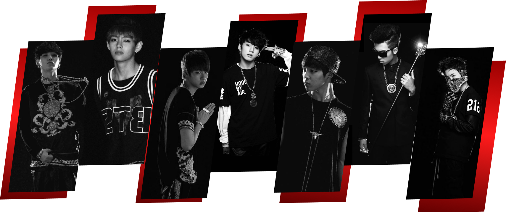

ARIRANG
O BTS descreve o álbum Arirang como um projeto muito pessoal, mostrando quem eles são hoje. O trabalho busca resgatar as raízes coreanas, inspirado na música tradicional “Arirang”. As músicas abordam sentimentos reais como saudade, crescimento e recomeço após um período de pausa. O grupo também apostou em um som mais experimental, sem focar apenas no sucesso comercial. Acima de tudo, o álbum foi feito para fortalecer a conexão emocional com os fãs.